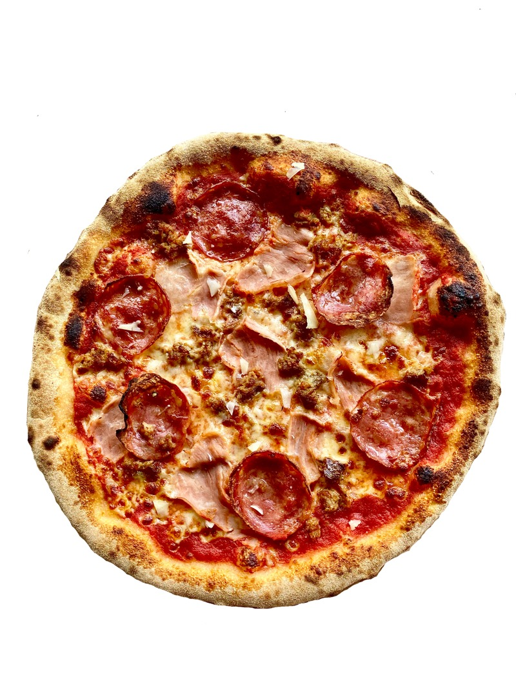
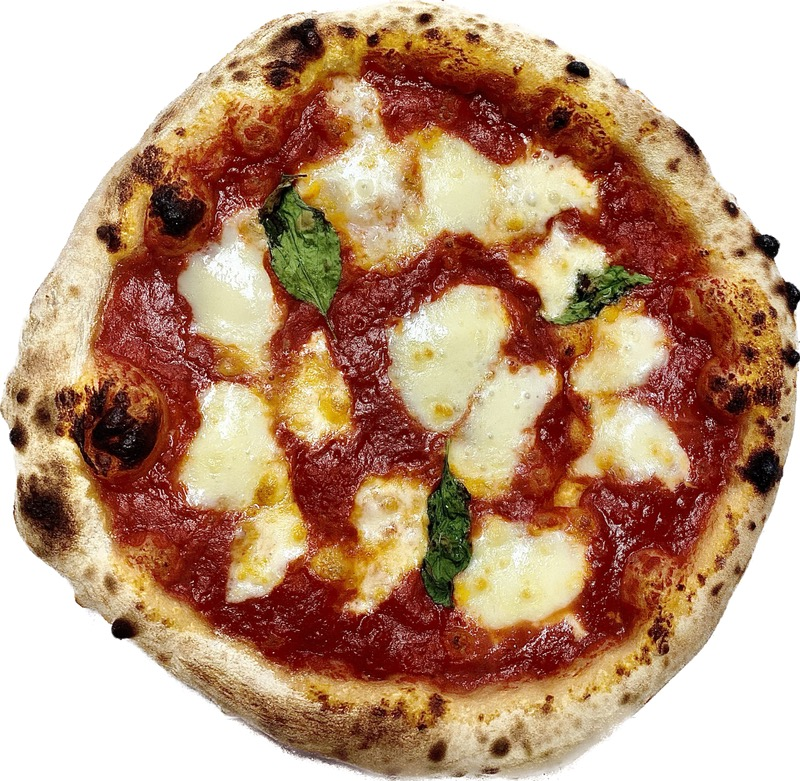
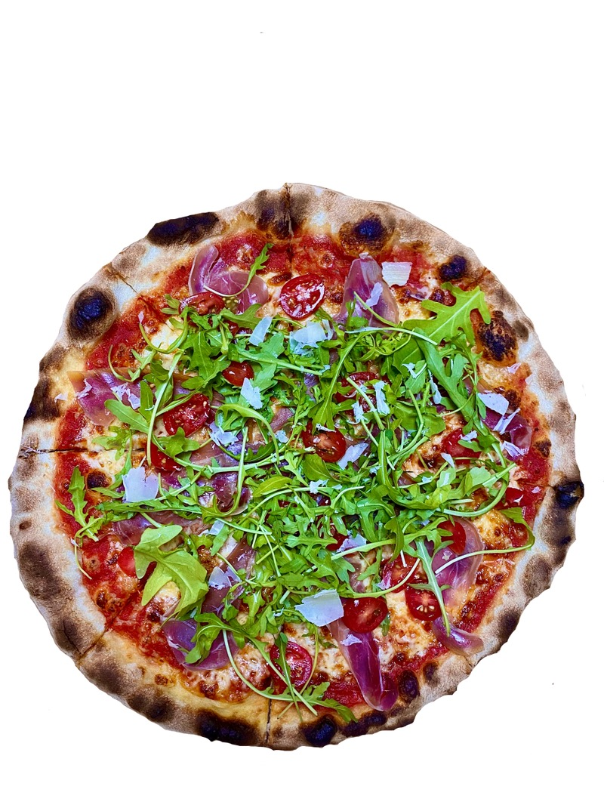

Пица Трипла Карне
15,39 лвДом. сос, моцарела, шунка Кото, италианска наденица и салам наполи
580 г
Тесто на пещ с хрупкав, опушен край, прясна моцарела и истински италиански съставки — от класическата Маргарита до Прошуто Крудо с рукола. Тел. за поръчки 0876 56 78 56.
От 2021 г. Pizza Nostra пече пици в истински италиански стил в самия център на Ямбол. Тесто с хрупкав, леко опушен край, доматен сос, прясна моцарела и подбрани съставки — прошуто крудо, скаморца, горгонзола, песто и рукола.
Всяка пица излиза от пещта такава, каквато бихме искали да я намерим и ние: прясна, ароматна и на достъпна цена. Затова гостите ни оставят оценка 4,6 от 5 в над сто отзива.
Отбий се на обяд или вечеря, вземи за вкъщи или поръчай за доставка — очакваме те на ул. „Александър Стамболийски“ 3.

Три причини ямболци да се връщат при нас отново и отново.
Хрупкав, леко опушен край и меко тесто — истинската текстура на неаполитанската пица, изпечена в пещ.
Прясна моцарела, скаморца, горгонзола, прошуто крудо, песто и зехтин — вкусове, пренесени директно от Италия.
Всяка пица — в малък и голям размер. За вкъщи, за офиса или на масата с приятели, на честна цена.
Няколко от пиците, които те очакват в Pizza Nostra.
Над 100 отзива в Google. Ето някои от тях.
„Много вкусна пица — всичко беше прясно и получихме добро обслужване. Хубав декор и чисто помещение. Препоръчвам.”
„Уютно и спокойно, с вкусна храна и любезен персонал. Пиците са хубави, в италиански стил!”
„Приветлив и услужлив персонал, който сервира много вкусна храна. Силно препоръчвам, когато сте в Ямбол.”